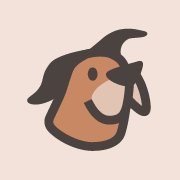
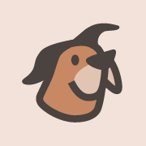
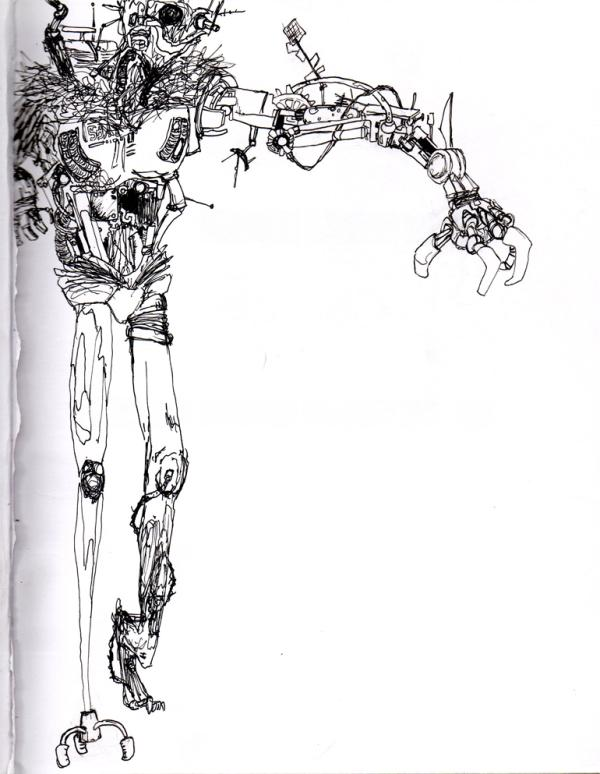
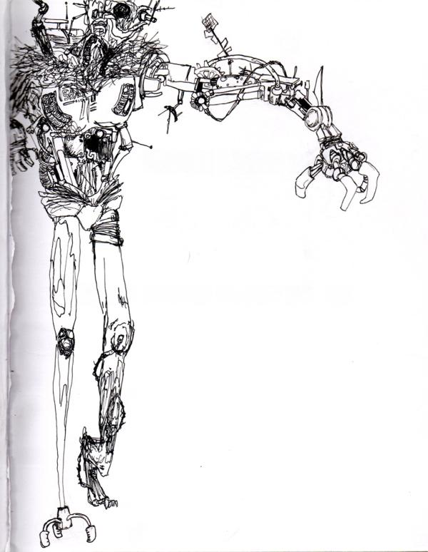
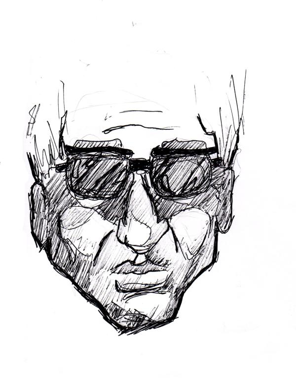
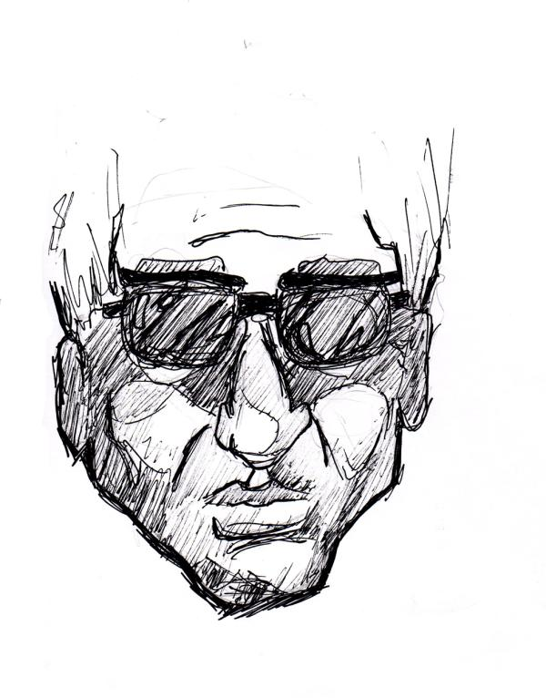

M.J. Schoen
User Experience. Design. Code. Art.
A collection of imaginative ideas
made of paints, pixels, ones and zeros.
Selected Work.

“Disbelief of the Impossible”
Gouache and pastel on illustration board,
18" by 15"
 

Read Dog
Logo Design
A logo design that evokes the joy of curling up with a fresh story, reflecting Read Dog's warm, engaging nature. The subscription service brings handpicked books directly to your armchair each month.
Graphiq
Infographic Webpage
An interactive infographic that gives a lively introduction to start-up life at Graphiq.com (formerly FindTheBest).

Columbia University Medical Center
Research Figure
An abstract representation of a revolutionary new medical procedure for C-sections.
Published in Nature Medicine Journal, March 2016.
 

 

Ink on paper, 9" by 11"
Ink on paper, 8" by 6"
Ink on paper, 9" by 11"
Ink on paper, 5" by 7"
“Overreaching Imagination”
Arnvik Group, LLC
Website
A spartan website that connects leading executives in the industrial field, headed by Eric Nielsen, with their prosperous, multinational clients.
Steve's Boards
Website — Work In Progress
A website for the longboards crafted by industrial designer, Steve Evans. It features a bespoke tool for custom longboard orders and exhibits his best work.
“Homebound from Niagara Falls"
Acrylic on illustration board, 6" by 4"
Pittore Vineyards
Web Design
A redesign created for the site of Pittore Vineyards, a family-owned and -operated winery in the sun-kissed hills of Napa Valley. An eCommerce shop displays the annual selection of Cabernet Sauvignon.
Gouache and ink on illustration board, 4" by 6"
Gouache and ink on illustration board, 25" by 30"
Gouache and ink on illustration board, 9" by 10"
Gouache and ink on illustration board, 25" by 30"
“Sound in Color”
Eat Local
Website
A festive recipe website that arranges a mouth-watering selection of dishes by the four seasons.
Charcoal on poster board, 24" by 30"
Colored pencil on poster board, 20" by 30"